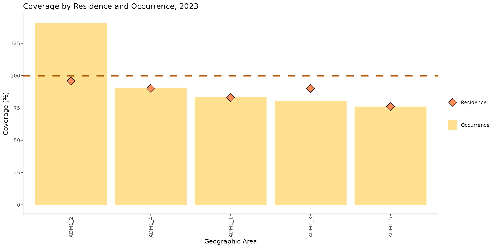
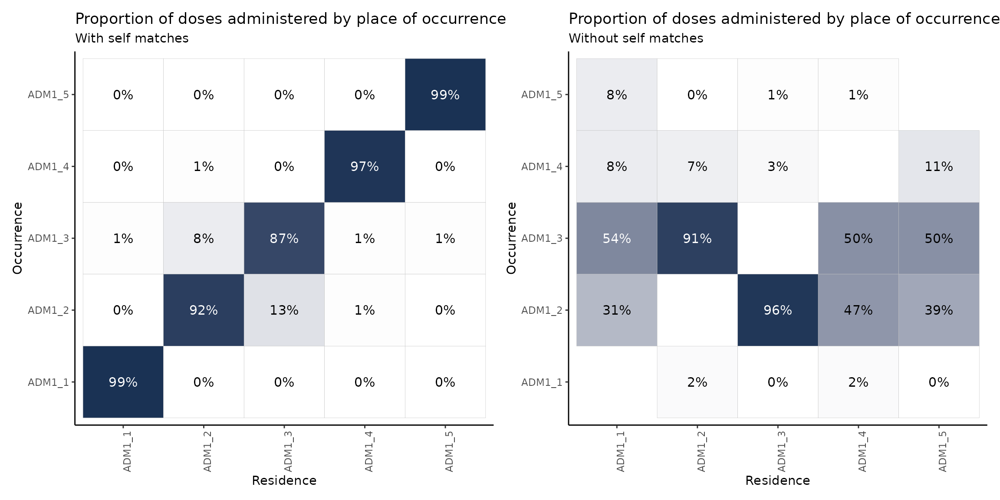
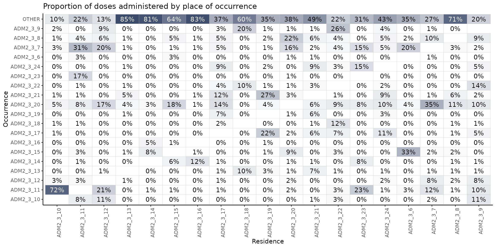

Residence vs. Occurrence Analyses
PAHO/CIM
April 9, 2025
Source:vignettes/residence_occurrence_en.Rmd
residence_occurrence_en.RmdRationale
It is common for Electronic Immunization Registries (EIR) to collect both the place of residence and the place of occurrence of the vaccination event. Vaccination coverage can be estimated by grouping events according to either location. However, denominators are typically estimated based on the place of residence.
Using either residence or occurrence as the numerator can lead to underestimation or overestimation of coverage, and sometimes result in values above 100%, especially in areas where vaccination services are more available.
The residence vs. occurrence module in the PAHOabc package provides a set of functions to explore and analyze this phenomenon.
Note
All functions used for residence and occurrence analyses within PAHOabc begin with the
roc_prefix.
Glossary
Political Geographic Boundaries
Throughout this vignette, we will make reference to different levels of political geographic boundaries. These levels are defined by the country/territory and can have different names from country to country. PAHOabc is agnostic to these names and requires the user to recode their variable names to fit the PAHOabc structure.
Namely, PAHOabc can distinguish three administrative levels, which listed from top to bottom level are: ADM0, ADM1 and ADM2.
- ADM0: The country. This is the top-most administrative level.
- ADM1: The first geographic subdivision in the country. ADM0 contains several ADM1 subdivisions.
- ADM2: The second geographic subdivision in the country. Each ADM1 contains several ADM2 subdivisions.
Vaccine Names
Our example datasets use a specific naming convention for the vaccine doses. This might not match your own naming schemes, but it will not affect the usage of the package as long as you make sure to be consistent when naming vaccine doses.
For example, the vaccine names used in the PAHOabc package are:
| Abbreviation | Full Name |
|---|---|
| SRP1 | Measles, Rubella, and Mumps Vaccine (1st dose) |
| DTP1 | Diphtheria, Tetanus, and Pertussis Vaccine (1st dose) |
| DTP2 | Diphtheria, Tetanus, and Pertussis Vaccine (2nd dose) |
| DTP3 | Diphtheria, Tetanus, and Pertussis Vaccine (3rd dose) |
| BCG RN | Bacillus Calmette–Guérin Vaccine (at birth) |
| YFV1 | Yellow Fever Vaccine (1st dose) |
Usage
Install Package
The first step to run the residence occurrence analyses is to install the PAHOabc package available on GitHub.
devtools::install_github("IM-Data-PAHO/pahoabc")Load Data
The functions in this module require you to provide three datasets in a specific format.
- Your EIR.
- The vaccination schedule related to this EIR.
- A table with population denominators depending on the geographic level of your analysis.
To make it easy for you to test out PAHOabc’s functionality and understand the structure we require for your datasets, we will now explore the example datasets provided by PAHOabc that are required by this module.
EIR
The pahoabc::pahoabc.EIR data frame provides a
simulated, nominal-level table representing individual vaccination
events from an Electronic Immunization Registry (EIR). Each row
corresponds to a single vaccination act for a person, including
information on their residence, where they were vaccinated (occurrence),
their date of birth, and the vaccine dose received.
pahoabc.EIR %>% head() %>% kable(caption = "Example Electronic Immunization Registry")| ID | date_birth | date_vax | ADM1_residence | ADM2_residence | ADM1_occurrence | ADM2_occurrence | dose |
|---|---|---|---|---|---|---|---|
| 191997 | 2023-08-08 | 2023-12-26 | ADM1_4 | ADM2_4_35 | ADM1_4 | ADM2_4_35 | DTP2 |
| 212189 | 2023-12-20 | 2023-12-26 | ADM1_5 | ADM2_5_61 | ADM1_5 | ADM2_5_61 | BCG RN |
| 118063 | 2022-09-15 | 2023-12-26 | ADM1_2 | ADM2_2_5 | ADM1_2 | ADM2_2_5 | DTP1 |
| 118063 | 2022-09-15 | 2023-12-26 | ADM1_2 | ADM2_2_5 | ADM1_2 | ADM2_2_5 | YFV1 |
| 130751 | 2022-10-27 | 2023-12-12 | ADM1_5 | ADM2_5_55 | ADM1_5 | ADM2_5_55 | YFV1 |
| 136532 | 2021-09-21 | 2023-12-26 | ADM1_3 | ADM2_3_12 | ADM1_3 | ADM2_3_12 | SRP1 |
-
ID: Unique person identification number. -
date_birth: Date of birth of person. -
date_vax: Date of vaccination event. - ADM1: Refers to the first geographic administrative level of the country.
- ADM2: Refers to the second geographic administrative level of the country.
- Residence: Refers to the place where the person lives.
- Occurrence: Refers to the place where the vaccination event
occurred.
-
dose: A combined variable representing the vaccine type and its corresponding dose number. For example, DTP1 refers to the first dose of a vaccine containing diphtheria, tetanus, and pertussis components.
Vaccination Schedule
The pahoabc::pahoabc.schedule dataset defines the
national immunization schedule, listing each vaccine dose and its
recommended age of administration (in days). It helps the package
determine whether an individual is up to date with their
vaccinations.
pahoabc.schedule %>% kable(caption = "Example Immunization Schedule")| dose | age_schedule | age_schedule_low | age_schedule_high |
|---|---|---|---|
| SRP1 | 365 | 365 | 395 |
| DTP1 | 60 | 60 | 90 |
| DTP2 | 120 | 120 | 150 |
| DTP3 | 180 | 180 | 210 |
| BCG RN | 0 | 0 | 30 |
| YFV1 | 365 | 365 | 395 |
-
dose: A combined variable representing the vaccine type and its corresponding dose number. For example, DTP1 refers to the first dose of a vaccine containing diphtheria, tetanus, and pertussis components. -
age_schedule: The recommended age of administration of the correspondingdosein days. -
age_schedule_low: The lower limit for the target age in days. -
age_schedule_high: The upper limit for the target age in days.
Note
The
dosenames must match exactly those in thedosecolumn of thepahoabc.EIRdataset.
Population Denominators
This module will require you to provide a table with population denominators. The geographic level of this table will be directly dependent on the geographic level of your analysis. For example, if you were to perform an analysis at ADM1 level, the required population denominator table must contain the following.
pahoabc.pop.ADM1 %>% head() %>% kable(caption = "Example Population at ADM1")| ADM1 | year | age | population |
|---|---|---|---|
| ADM1_1 | 2022 | 0 | 1718.189 |
| ADM1_1 | 2022 | 1 | 1808.964 |
| ADM1_1 | 2023 | 0 | 1703.145 |
| ADM1_1 | 2023 | 1 | 1792.443 |
| ADM1_2 | 2022 | 0 | 6575.261 |
| ADM1_2 | 2022 | 1 | 6922.644 |
Note that this table is in long format and contains the corresponding
population of children of a specific age
during a given year for a certain ADM1
level.
Note
If your analysis is at a different political geographic level, see
pahoabc::pahoabc.pop.ADM0andpahoabc::pahoabc.pop.ADM2for the required format and columns.
Coverage Analysis
The first subsection of this module provides a way of analyzing coverage rates by both place of residence and place of vaccination (occurrence).
Expected Workflow
The roc_coverage() and roc_barplot()
functions work together to perform coverage analysis and visualization.
The roc_coverage() function computes vaccination coverage
by both residence and occurrence across selected administrative levels,
years, and vaccines. Its output (a data table) is structured to be
directly compatible with roc_barplot(), which generates a
visualization for a specific year and vaccine.
Alternatively, the roc_coverage_by() function is
available when you want to calculate coverage by either residence or
occurrence (but not both). While it produces a similar table, its output
is not compatible with roc_barplot().

Example
Here is a simple use case of the roc_coverage()
function, where we compute coverage by both metrics for the DTP1 vaccine
in 2023 for our example datasets.
# compute coverage
coverage_df <- roc_coverage(
data.EIR = pahoabc.EIR,
data.schedule = pahoabc.schedule,
data.pop = pahoabc.pop.ADM1,
geo_level = "ADM1",
years = 2023, # this can be a vector of years
vaccines = "DTP1" # this can be a vector of vaccines
)
# show results in table
coverage_df %>%
kable(digits = 3, caption = "Vaccination coverage by ADM1 level")| dose | year | age | ADM1 | doses_applied | population | coverage | coverage_type |
|---|---|---|---|---|---|---|---|
| DTP1 | 2023 | 0 | ADM1_1 | 1413 | 1703.145 | 82.964 | residence |
| DTP1 | 2023 | 0 | ADM1_2 | 6238 | 6517.689 | 95.709 | residence |
| DTP1 | 2023 | 0 | ADM1_3 | 27492 | 30497.127 | 90.146 | residence |
| DTP1 | 2023 | 0 | ADM1_4 | 3678 | 4081.329 | 90.118 | residence |
| DTP1 | 2023 | 0 | ADM1_5 | 2010 | 2645.993 | 75.964 | residence |
| DTP1 | 2023 | 0 | ADM1_1 | 1425 | 1703.145 | 83.669 | occurrence |
| DTP1 | 2023 | 0 | ADM1_2 | 9194 | 6517.689 | 141.062 | occurrence |
| DTP1 | 2023 | 0 | ADM1_3 | 24494 | 30497.127 | 80.316 | occurrence |
| DTP1 | 2023 | 0 | ADM1_4 | 3705 | 4081.329 | 90.779 | occurrence |
| DTP1 | 2023 | 0 | ADM1_5 | 2013 | 2645.993 | 76.077 | occurrence |
This output may be fed directly into the roc_barplot()
function as shown below.
# visualize output from roc_coverage()
coverage_plot <- roc_barplot(
data = coverage_df,
year = 2023,
vaccine = "DTP1"
)
# show
coverage_plot
This chart shows the vaccination coverage achieved by each subnational administrative level, considering both the place of occurrence and the place of residence. The yellow bars represent coverage by place of occurrence, meaning that the numerator includes all doses administered in that location. The orange diamonds represent coverage by place of residence, meaning that the numerator includes people who reside in that location, regardless of where they received the vaccine.
We can observe that the coverage by both residence and occurrence in ADM1_1, ADM1_4, and ADM1_5 are similar. However, in ADM1_2 and ADM1_3, there are differences between the two types of coverage.
In ADM1_2, the coverage by occurrence reaches 141%, while the coverage by residence is 95%, resulting in a difference of 46 percentage points. In ADM1_3, the coverage by occurrence is 80%, while the coverage by residence is 90%, with a difference of 10 percentage points in favor of the coverage by residence.
These patterns suggest a meaningful population flow between administrative areas. Specifically, in ADM1_2, the high coverage by occurrence alongside lower coverage by residence indicates that many individuals vaccinated in this area actually reside elsewhere. Conversely, ADM1_3 shows higher coverage by residence than by occurrence, suggesting that a significant number of its residents are traveling to other areas to receive their vaccinations.
Dose Distribution Analysis
The distribution analysis functions in this package help analyze where people get vaccinated depending on their place of residence.
Expected Workflow
The roc_distribution() and roc_heatmap()
functions provide a way of analyzing population flow between
administrative areas. For example, one might be interested in observing
where people who reside in a single region get vaccinated (e.g., do they
all get vaccinated within their own region, or do they move to other
regions?).
The figure below shows the expected workflow for these functions.

Example at First Administrative Level
This analysis only requires you to provide your EIR in conjunction with other simple parameters. For example, let us compute how vaccination is distributed at the first administrative level for the DTP1 vaccine in 2023.
# compute distribution of doses for each place of residence
distribution_df <- roc_distribution(
data.EIR = pahoabc.EIR,
vaccine = "DTP1",
geo_level = "ADM1",
birth_cohort = 2023,
include_self_matches = TRUE
)
# show results in table (view only a couple of regions for simplicity)
distribution_df %>%
filter(ADM1_residence %in% c("ADM1_1", "ADM1_3")) %>%
kable(digits = 3, caption = "Vaccination distribution for each place of residence by place of occurrence")| ADM1_residence | ADM1_occurrence | frequency | proportion |
|---|---|---|---|
| ADM1_1 | ADM1_3 | 7 | 0.006 |
| ADM1_1 | ADM1_2 | 4 | 0.004 |
| ADM1_1 | ADM1_4 | 1 | 0.001 |
| ADM1_1 | ADM1_5 | 1 | 0.001 |
| ADM1_1 | ADM1_1 | 1084 | 0.988 |
| ADM1_3 | ADM1_3 | 18443 | 0.868 |
| ADM1_3 | ADM1_2 | 2685 | 0.126 |
| ADM1_3 | ADM1_4 | 88 | 0.004 |
| ADM1_3 | ADM1_5 | 17 | 0.001 |
| ADM1_3 | ADM1_1 | 12 | 0.001 |
For example, 87% of people who reside in ADM1_3 got vaccinated for
DTP1 there as well. But an additional 13% received their DTP1
vaccination elsewhere (namely, in ADM1_2). If you want to further drill
into the people that got vaccinated in a place different from their
place of residence, you may set the include_self_matches
parameter to FALSE.
# compute distribution of doses for each place of residence
distribution_df2 <- roc_distribution(
data.EIR = pahoabc.EIR,
vaccine = "DTP1",
geo_level = "ADM1",
birth_cohort = 2023,
# set this to FALSE to exclude cases where people get vaccinated in their place of residence
include_self_matches = FALSE
)
# show results in table (focus on ADM1_3 only for this example)
distribution_df2 %>%
filter(ADM1_residence == "ADM1_3") %>%
kable(digits = 3, caption = "Where do residents of ADM1_3 get vaccinated?")| ADM1_residence | ADM1_occurrence | frequency | proportion |
|---|---|---|---|
| ADM1_3 | ADM1_2 | 2685 | 0.958 |
| ADM1_3 | ADM1_4 | 88 | 0.031 |
| ADM1_3 | ADM1_5 | 17 | 0.006 |
| ADM1_3 | ADM1_1 | 12 | 0.004 |
This shows that 96% of the people in ADM1_3 who do not get vaccinated in their place of residence, get vaccinated in ADM1_2.
A clearer picture of this can be provided by the
roc_heatmap() function.
library(patchwork) # to show them side by side
# generate the plots
distribution_plot <- roc_heatmap(distribution_df) # with self matches
distribution_plot2 <- roc_heatmap(distribution_df2) # without self matches
# add subtitle
distribution_plot <- distribution_plot + labs(subtitle = "With self matches")
distribution_plot2 <- distribution_plot2 + labs(subtitle = "Without self matches")
# show them side by side
distribution_plot + distribution_plot2
Note
The plot on the right shows the proportion of doses administered in a place different from their place of residence. This is why the diagonal is empty.
These plots may be read either in a vertical or horizontal fashion. When reading the plot vertically, the columns will sum to 100% (up to a rounding error). That is, each column represents the population of, say, ADM1_1 and where they get vaccinated. For example, if we concentrate on the plot on the right and read it vertically, we may say that, of the total amount of people who reside in ADM1_1 and get vaccinated in a place different from their place of residence, 54% does so in ADM1_3, 31% in ADM1_2 and a remaining 16% in ADM1_4 and ADM1_5.
When reading horizontally, rows will not sum to 100%, but are still indicative of the residences of people getting vaccinated in a certain region. For example, reading the plot on the left in a horizontal fashion we may note that 92% of the residents of ADM1_2 get vaccinated there as well, but this region also vaccinates a significant proportion of residents of ADM1_3 (13%).
Example at Second Administrative Level
An analysis at a more granular level is beneficial in this case. Let us repeat the above process, but at the second administrative level (e.g., districts within a certain region).
# compute distribution of doses for each place of residence at second
# administrative level (focus on ADM1_3 only for this example)
distribution_df3 <- roc_distribution(
data.EIR = pahoabc.EIR,
vaccine = "DTP1",
geo_level = "ADM2",
birth_cohort = 2023,
include_self_matches = FALSE,
within_ADM1 = "ADM1_3" # set the region to drill into
)
# show results in plot
distribution_plot3 <- roc_heatmap(
distribution_df3
)
# show
distribution_plot3
In this heatmap, we observe the proportion of vaccination events that take place in a location different from the place of residence, broken down by the second administrative level.
As an example, it is notable that among all individuals residing in ADM2_3_10 who are vaccinated outside their area of residence, 72% receive their vaccine in ADM2_3_11. Similarly, 23% of individuals from ADM2_3_23 who are vaccinated elsewhere, are vaccinated in ADM2_3_11.
Looking at the heatmap horizontally, we can see that ADM2_3_20 provides vaccinations to a large number of people coming from other areas: 35% of those from ADM2_3_7, 18% from ADM2_3_15, 17% from ADM2_3_12, 14% from ADM2_3_17, etc.
The top row is also interesting, since it indicates people getting vaccinated outside of ADM1_3 entirely. For example, in column 4, 85% of the residents of ADM3_3_13 get vaccinated outside of ADM1_3, suggesting a strong population flow.
Summary
This vignette showed how you can use the PAHOabc package to compare vaccination coverage by place of residence and place of occurrence, and to explore how people move between areas to get vaccinated.
We saw that coverage can vary a lot depending on which location you use, and in some cases, coverage by occurrence can go over 100% — a sign that people are coming from elsewhere to get vaccinated. The distribution and heatmap functions help visualize these patterns and can reveal which areas act as service hubs or where people are going for vaccines.
Overall, this kind of analysis helps make sense of population flows and supports better planning for immunization programs.